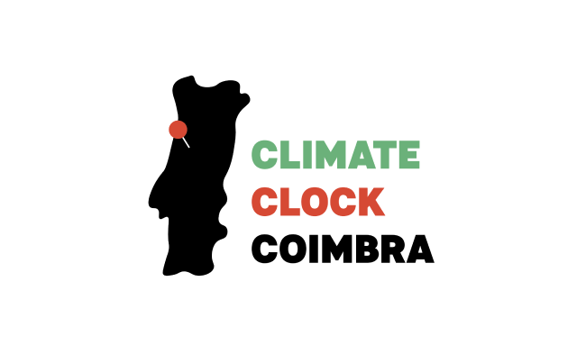

MARCH 2021
CLIMATE CLOCK COIMBRA
Projeto desenvolvido em grupo, no contexto da júnior empresa jeKnowledge. O Climate Clock surgiu de uma colaboração entre cientistas, artistas e ativistas. O relógio serve como uma ferramenta para pressionar os decisores governamentais e a população no geral a agirem pelo Planeta. O meu trabalho centrou-se no desenvolvimento de uma identidade visual, de um website e os respetivos elementos de comunicação (publicações nas redes socais, documentação para parceiros, etc.).
